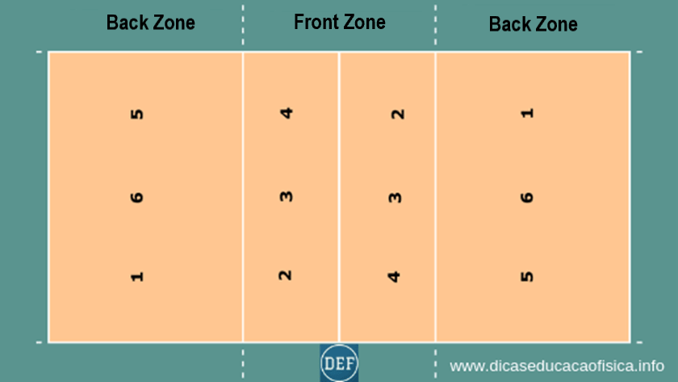
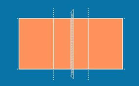

Prologue
There are many rules to the game of Volleyball. I will be talking about the modern rules here. The main rule of volleyball is, DON'T LET THE BALL TOUCH THE GROUND. But besides that volleyball is an extremely intricate game once you get into it. The rules of volleyball are moderated, changed, and distributed by USAVolleyball.
Setting up
 The net, the quintessential image of volleyball, is at a height of around seven feet, 11 ⅝ inches for men as stated in the introduction, then seven feet four inches for womens. The court boundaries consist of a large rectangle with the net in the middle. The court is fifty-nine feet by twenty-nine feet six inches with two lines on either side maring the ten foot lines; these will be important later. Normal six v six volleyball games consist of three sets to 25. In the case of 24-24 it is a win by two scenarios. Meaning your team would have to score points making the score 26-24 to win.
Rules
To start the game, put six players on each side of the net. Have the player in the back left hit/serve the ball over the net from anywhere behind the back line. Do not cross the back line while serving or else the opposite team will automatically get the point (Foot Fault). It doesn't matter where the ball is served to as long as it is in the other team's court. If the ball hits the line in any way on the outside perimeter on the opposing team's court it is in play.
After The Serve
Once the serve has been received, also known as the serve receive, the opposing team has 3 touches to send the ball back over the net. Then the rally, which is the name for the ball going back and forth over the net, will continue indefinitely until any team makes a mistake. This means, if the ball is touched more than three times on either side without it going over the net, it is the other team's point. Or it could be if the ball went out of bounds, or hit the ground in play. Players rotate clockwise around the court whenever possession is switched. Possession is switched when the team that is serving loses a point, prompting either team to rotate servers. The image below shows how rotations look and the numbers are the different players on the court. Player one goes to Player six, Player six goes to Player five, Player five goes to Player four and so on.